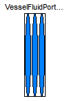
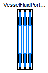

| Name | Description |
|---|---|
| Lumped volume with a vector of fluid ports and replaceable heat transfer model | |
| HeatTransfer models for vessels | |
| Data to describe inlet/outlet ports at vessels: diameter -- Inner (hydraulic) diameter of inlet/outlet port height -- Height over the bottom of the vessel zeta_out -- Hydraulic resistance out of vessel, default 0.5 for small diameter mounted flush with the wall zeta_in -- Hydraulic resistance into vessel, default 1.04 for small diameter mounted flush with the wall | |
| Fluid connector with filled, large icon to be used for horizontally aligned vectors of FluidPorts (vector dimensions must be added after dragging) | |
| VesselFluidPorts_b | Fluid connector with outlined, large icon to be used for horizontally aligned vectors of FluidPorts (vector dimensions must be added after dragging) |
 Modelica.Fluid.Vessels.BaseClasses.PartialLumpedVessel
Modelica.Fluid.Vessels.BaseClasses.PartialLumpedVessel

This base class extends PartialLumpedVolume with a vector of fluid ports and a replaceable wall HeatTransfer model.
The following modeling assumption are made:
fluidlevel < portsData_height[i] and ports[i].p < vessel_ps_static[i] massflow at the port is set to 0.portsData record.
Alternatively the impact of port geometries can be neglected with use_portsData=false. This might be useful for early
design studies. Note that this means to assume an infinite port diameter at the bottom of the vessel.
Pressure drops and heights of the ports as well as kinetic and potential energy fluid entering or leaving the vessel are neglected then.
The following variables need to be defined by an extending model:
input fluidVolume, the volume of the fluid in the vessel,vessel_ps_static[nPorts], the static pressures inside the vessel at the height of the corresponding ports, at zero flow velocity, andWb_flow, work term of the energy balance, e.g., p*der(V) if the volume is not constant or stirrer power.parameter vesselArea (default: Modelica.Constants.inf m2), the area of the vessel, to be related to cross flow areas of the ports for the consideration of dynamic pressure effects.portsData_height[nPorts].
This is why an extending model with varying fluid level needs to define:
input fluidLevel (default: 0m), the level the fluid in the vessel, andparameter fluidLevel_max (default: 1m), the maximum level that must not be exceeded. Ports at or above fluidLevel_max can only receive inflow.portsData record defined in the configuration dialog,
as an access to portsData may fail for use_portsData=false or nPorts=0.
Instead the predefined variables
portsData_diameter[nPorts]portsData_height[nPorts]portsData_zeta_in[nPorts]portsData_zeta_out[nPorts]Extends from Modelica.Fluid.Interfaces.PartialLumpedVolume (Lumped volume with mass and energy balance).
| Type | Name | Default | Description |
|---|---|---|---|
| replaceable package Medium | PartialMedium | Medium in the component | |
| Ports | |||
| Boolean | use_portsData | true | = false to neglect pressure loss and kinetic energy |
| VesselPortsData | portsData[nPorts] | Data of inlet/outlet ports | |
| Assumptions | |||
| Dynamics | |||
| Dynamics | energyDynamics | system.energyDynamics | Formulation of energy balance |
| Dynamics | massDynamics | system.massDynamics | Formulation of mass balance |
| Heat transfer | |||
| Boolean | use_HeatTransfer | false | = true to use the HeatTransfer model |
| Initialization | |||
| AbsolutePressure | p_start | system.p_start | Start value of pressure [Pa] |
| Boolean | use_T_start | true | = true, use T_start, otherwise h_start |
| Temperature | T_start | if use_T_start then system.T... | Start value of temperature [K] |
| SpecificEnthalpy | h_start | if use_T_start then Medium.s... | Start value of specific enthalpy [J/kg] |
| MassFraction | X_start[Medium.nX] | Medium.X_default | Start value of mass fractions m_i/m [kg/kg] |
| ExtraProperty | C_start[Medium.nC] | fill(0, Medium.nC) | Start value of trace substances |
| Advanced | |||
| Port properties | |||
| MassFlowRate | m_flow_small | system.m_flow_small | Regularization range at zero mass flow rate [kg/s] |
| Type | Name | Description |
|---|---|---|
| VesselFluidPorts_b | ports[nPorts] | Fluid inlets and outlets |
| HeatPort_a | heatPort |
partial model PartialLumpedVessel "Lumped volume with a vector of fluid ports and replaceable heat transfer model" extends Modelica.Fluid.Interfaces.PartialLumpedVolume; // Port definitions parameter Integer nPorts=0 "Number of ports";VesselFluidPorts_b ports[nPorts](redeclare each package Medium = Medium) "Fluid inlets and outlets"; // Port properties parameter Boolean use_portsData=true "= false to neglect pressure loss and kinetic energy"; parameter Modelica.Fluid.Vessels.BaseClasses.VesselPortsData[nPorts] portsData if use_portsData "Data of inlet/outlet ports"; parameter SI.MassFlowRate m_flow_small(min=0) = system.m_flow_small "Regularization range at zero mass flow rate"; /* parameter Medium.AbsolutePressure dp_small = system.dp_small "Turbulent flow if |dp| >= dp_small (regularization of zero flow)" annotation(Dialog(tab="Advanced",group="Ports")); */ Medium.EnthalpyFlowRate ports_H_flow[nPorts]; Medium.MassFlowRate ports_mXi_flow[nPorts,Medium.nXi]; Medium.MassFlowRate[Medium.nXi] sum_ports_mXi_flow "Substance mass flows through ports"; Medium.ExtraPropertyFlowRate ports_mC_flow[nPorts,Medium.nC]; Medium.ExtraPropertyFlowRate[Medium.nC] sum_ports_mC_flow "Trace substance mass flows through ports"; // Heat transfer through boundary parameter Boolean use_HeatTransfer = false "= true to use the HeatTransfer model"; replaceable model HeatTransfer = Modelica.Fluid.Vessels.BaseClasses.HeatTransfer.IdealHeatTransfer constrainedby Modelica.Fluid.Vessels.BaseClasses.HeatTransfer.PartialVesselHeatTransfer "Wall heat transfer";HeatTransfer heatTransfer( redeclare final package Medium = Medium, final n=1, final states = {medium.state}, final use_k = use_HeatTransfer); Modelica.Thermal.HeatTransfer.Interfaces.HeatPort_a heatPort if use_HeatTransfer; // Conservation of kinetic energy Medium.Density[nPorts] portDensities "densites of the fluid at the device boudary"; SI.Velocity[nPorts] portVelocities "velocities of fluid flow at device boundary"; SI.EnergyFlowRate[nPorts] ports_E_flow "flow of kinetic and potential energy at device boundary"; // Note: should use fluidLevel_start - portsData.height Real[nPorts] s(each start = fluidLevel_max) "curve parameters for port flows vs. port pressures; for further details see, Modelica Tutorial: Ideal switching devices"; Real[nPorts] ports_penetration "penetration of port with fluid, depending on fluid level and port diameter"; // treatment of pressure losses at ports SI.Area[nPorts] portAreas = {Modelica.Constants.pi/4*portsData_diameter[i]^2 for i in 1:nPorts}; Medium.AbsolutePressure[nPorts] vessel_ps_static "static pressures inside the vessel at the height of the corresponding ports, zero flow velocity"; protected input SI.Height fluidLevel = 0 "level of fluid in the vessel for treating heights of ports"; parameter SI.Height fluidLevel_max = 1 "maximum level of fluid in the vessel"; parameter SI.Area vesselArea = Modelica.Constants.inf "Area of the vessel used to relate to cross flow area of ports"; // Treatment of use_portsData=false to neglect portsData and to not require its specification either in this case. // Remove portsData conditionally if use_portsData=false. Simplify their use in model equations by always // providing portsData_diameter and portsData_height, independend of the use_portsData setting. // Note: this moreover serves as work-around if a tool does not support a zero sized portsData record. Modelica.Blocks.Interfaces.RealInput[nPorts] portsData_diameter_internal = portsData.diameter if use_portsData and nPorts > 0; Modelica.Blocks.Interfaces.RealInput[nPorts] portsData_height_internal = portsData.height if use_portsData and nPorts > 0; Modelica.Blocks.Interfaces.RealInput[nPorts] portsData_zeta_in_internal = portsData.zeta_in if use_portsData and nPorts > 0; Modelica.Blocks.Interfaces.RealInput[nPorts] portsData_zeta_out_internal = portsData.zeta_out if use_portsData and nPorts > 0; Modelica.Blocks.Interfaces.RealInput[nPorts] portsData_diameter; Modelica.Blocks.Interfaces.RealInput[nPorts] portsData_height; Modelica.Blocks.Interfaces.RealInput[nPorts] portsData_zeta_in; Modelica.Blocks.Interfaces.RealInput[nPorts] portsData_zeta_out; equation mb_flow = sum(ports.m_flow); mbXi_flow = sum_ports_mXi_flow; mbC_flow = sum_ports_mC_flow; Hb_flow = sum(ports_H_flow) + sum(ports_E_flow); Qb_flow = heatTransfer.Q_flows[1]; // Only one connection allowed to a port to avoid unwanted ideal mixing for i in 1:nPorts loop assert(cardinality(ports[i]) <= 1," each ports[i] of volume can at most be connected to one component. If two or more connections are present, ideal mixing takes place with these connections, which is usually not the intention of the modeller. Increase nPorts to add an additional port. "); end for; // Check for correct solution assert(fluidLevel <= fluidLevel_max, "Vessel is overflowing (fluidLevel > fluidLevel_max = " + String(fluidLevel) + ")"); assert(fluidLevel > -1e-6*fluidLevel_max, "Fluid level (= " + String(fluidLevel) + ") is below zero meaning that the solution failed."); // Boundary conditions // treatment of conditional portsData connect(portsData_diameter, portsData_diameter_internal); connect(portsData_height, portsData_height_internal); connect(portsData_zeta_in, portsData_zeta_in_internal); connect(portsData_zeta_out, portsData_zeta_out_internal); if not use_portsData then portsData_diameter = zeros(nPorts); portsData_height = zeros(nPorts); portsData_zeta_in = zeros(nPorts); portsData_zeta_out = zeros(nPorts); end if; // actual definition of port variables for i in 1:nPorts loop if use_portsData then // dp = 0.5*zeta*d*v*|v| // Note: assume vessel_ps_static for portDensities to avoid algebraic loops for ports.p portDensities[i] = noEvent(Medium.density(Medium.setState_phX(vessel_ps_static[i], actualStream(ports[i].h_outflow), actualStream(ports[i].Xi_outflow)))); portVelocities[i] = smooth(0, ports[i].m_flow/portAreas[i]/portDensities[i]); // Note: the penetration should not go too close to zero as this would prevent a vessel from running empty ports_penetration[i] = Utilities.regStep(fluidLevel - portsData_height[i] - 0.1*portsData_diameter[i], 1, 1e-3, 0.1*portsData_diameter[i]); else // an infinite port diameter is assumed portDensities[i] = medium.d; portVelocities[i] = 0; ports_penetration[i] = 1; end if; // fluid flow through ports if fluidLevel >= portsData_height[i] then // regular operation: fluidLevel is above ports[i] // Note: >= covers default values of zero as well if use_portsData then /* Without regularization ports[i].p = vessel_ps_static[i] + 0.5*ports[i].m_flow^2/portAreas[i]^2 * noEvent(if ports[i].m_flow>0 then zeta_in[i]/portDensities[i] else -zeta_out[i]/medium.d); */ ports[i].p = vessel_ps_static[i] + (0.5/portAreas[i]^2*Utilities.regSquare2(ports[i].m_flow, m_flow_small, (portsData_zeta_in[i] - 1 + portAreas[i]^2/vesselArea^2)/portDensities[i]*ports_penetration[i], (portsData_zeta_out[i] + 1 - portAreas[i]^2/vesselArea^2)/medium.d/ports_penetration[i])); /* // alternative formulation m_flow=f(dp); not allowing the ideal portsData_zeta_in[i]=1 though ports[i].m_flow = smooth(2, portAreas[i]*Utilities.regRoot2(ports[i].p - vessel_ps_static[i], dp_small, 2*portDensities[i]/portsData_zeta_in[i], 2*medium.d/portsData_zeta_out[i])); */ else ports[i].p = vessel_ps_static[i]; end if; s[i] = fluidLevel - portsData_height[i]; elseif s[i] > 0 or portsData_height[i] >= fluidLevel_max then // ports[i] is above fluidLevel and has inflow ports[i].p = vessel_ps_static[i]; s[i] = ports[i].m_flow; else // ports[i] is above fluidLevel, preventing outflow ports[i].m_flow = 0; s[i] = (ports[i].p - vessel_ps_static[i])/Medium.p_default*(portsData_height[i] - fluidLevel); end if; ports[i].h_outflow = medium.h; ports[i].Xi_outflow = medium.Xi; ports[i].C_outflow = C; ports_H_flow[i] = ports[i].m_flow * actualStream(ports[i].h_outflow) "Enthalpy flow"; ports_E_flow[i] = ports[i].m_flow*(0.5*portVelocities[i]*portVelocities[i] + system.g*portsData_height[i]) "Flow of kinetic and potential energy"; ports_mXi_flow[i,:] = ports[i].m_flow * actualStream(ports[i].Xi_outflow) "Component mass flow"; ports_mC_flow[i,:] = ports[i].m_flow * actualStream(ports[i].C_outflow) "Trace substance mass flow"; end for; for i in 1:Medium.nXi loop sum_ports_mXi_flow[i] = sum(ports_mXi_flow[:,i]); end for; for i in 1:Medium.nC loop sum_ports_mC_flow[i] = sum(ports_mC_flow[:,i]); end for;connect(heatPort, heatTransfer.heatPorts[1]); end PartialLumpedVessel;
 Modelica.Fluid.Vessels.BaseClasses.VesselPortsData
Modelica.Fluid.Vessels.BaseClasses.VesselPortsData
This record describes the ports of a vessel. The variables in it are mostly self-explanatory (see list below); only the ζ loss factors are discussed further. All data is quoted from Idelchik (1994).
If a straight pipe with constant cross section is mounted flush with the wall, its outlet pressure loss coefficient will be ζ = 0.5 (Idelchik, p. 160, Diagram 3-1, paragraph 2).
If a straight pipe with constant cross section is mounted into a vessel such that the entrance into it is at a distance b from the wall (inside) the following table can be used. Herein, δ is the tube wall thickness (Idelchik, p. 160, Diagram 3-1, paragraph 1).
| b / D_hyd | ||||||
|---|---|---|---|---|---|---|
| 0.000 | 0.005 | 0.020 | 0.100 | 0.500-∞ | ||
| δ / D_hyd | 0.000 | 0.50 | 0.63 | 0.73 | 0.86 | 1.00 |
| 0.008 | 0.50 | 0.55 | 0.62 | 0.74 | 0.88 | |
| 0.016 | 0.50 | 0.51 | 0.55 | 0.64 | 0.77 | |
| 0.024 | 0.50 | 0.50 | 0.52 | 0.58 | 0.68 | |
| 0.040 | 0.50 | 0.50 | 0.51 | 0.51 | 0.54 | |
If a straight pipe with a circular bellmouth inlet (collector) without baffle is mounted flush with the wall then its pressure loss coefficient can be established from the following table. Herein, r is the radius of the bellmouth inlet surface (Idelchik, p. 164 f., Diagram 3-4, paragraph b)
| r / D_hyd | ||||||
|---|---|---|---|---|---|---|
| 0.01 | 0.03 | 0.05 | 0.08 | 0.16 | ≥0.20 | |
| ζ | 0.44 | 0.31 | 0.22 | 0.15 | 0.06 | 0.03 |
If a straight pipe with a circular bellmouth inlet (collector) without baffle is mounted at a distance from a wall then its pressure loss coefficient can be established from the following table. Herein, r is the radius of the bellmouth inlet surface (Idelchik, p. 164 f., Diagram 3-4, paragraph a)
| r / D_hyd | ||||||
|---|---|---|---|---|---|---|
| 0.01 | 0.03 | 0.05 | 0.08 | 0.16 | ≥0.20 | |
| ζ | 0.87 | 0.61 | 0.40 | 0.20 | 0.06 | 0.03 |
If a straight pipe with constant circular cross section is mounted flush with the wall, its vessel inlet pressure loss coefficient will be according to the following table (Idelchik, p. 209 f., Diagram 4-2 with A_port/A_vessel = 0 and Idelchik, p. 640, Diagram 11-1, graph a). According to the text, m = 9 is appropriate for fully developed turbulent flow.
| m | ||||||
|---|---|---|---|---|---|---|
| 1.0 | 2.0 | 3.0 | 4.0 | 7.0 | 9.0 | |
| ζ | 2.70 | 1.50 | 1.25 | 1.15 | 1.06 | 1.04 |
For larger port diameters, relative to the area of the vessel, the inlet pressure loss coefficient will be according to the following table (Idelchik, p. 209 f., Diagram 4-2 with m = 7).
| A_port / A_vessel | ||||||
|---|---|---|---|---|---|---|
| 0.0 | 0.1 | 0.2 | 0.4 | 0.6 | 0.8 | |
| ζ | 1.04 | 0.84 | 0.67 | 0.39 | 0.18 | 0.06 |
Extends from Modelica.Icons.Record (Icon for records).
| Type | Name | Default | Description |
|---|---|---|---|
| Diameter | diameter | Inner (hydraulic) diameter of inlet/outlet port [m] | |
| Height | height | 0 | Height over the bottom of the vessel [m] |
| Real | zeta_out | 0.5 | Hydraulic resistance out of vessel, default 0.5 for small diameter mounted flush with the wall |
| Real | zeta_in | 1.04 | Hydraulic resistance into vessel, default 1.04 for small diameter mounted flush with the wall |
record VesselPortsData "Data to describe inlet/outlet ports at vessels:
diameter -- Inner (hydraulic) diameter of inlet/outlet port
height -- Height over the bottom of the vessel
zeta_out -- Hydraulic resistance out of vessel, default 0.5 for small diameter mounted flush with the wall
zeta_in -- Hydraulic resistance into vessel, default 1.04 for small diameter mounted flush with the wall"
extends Modelica.Icons.Record;
parameter SI.Diameter diameter
"Inner (hydraulic) diameter of inlet/outlet port";
parameter SI.Height height = 0 "Height over the bottom of the vessel";
parameter Real zeta_out(min=0)=0.5
"Hydraulic resistance out of vessel, default 0.5 for small diameter mounted flush with the wall";
parameter Real zeta_in(min=0)=1.04
"Hydraulic resistance into vessel, default 1.04 for small diameter mounted flush with the wall";
end VesselPortsData;

| Type | Name | Default | Description |
|---|---|---|---|
| replaceable package Medium | PartialMedium | Medium model | |
| Type | Name | Description |
|---|---|---|
| flow MassFlowRate | m_flow | Mass flow rate from the connection point into the component [kg/s] |
| AbsolutePressure | p | Thermodynamic pressure in the connection point [Pa] |
| stream SpecificEnthalpy | h_outflow | Specific thermodynamic enthalpy close to the connection point if m_flow < 0 [J/kg] |
| stream MassFraction | Xi_outflow[Medium.nXi] | Independent mixture mass fractions m_i/m close to the connection point if m_flow < 0 [kg/kg] |
| stream ExtraProperty | C_outflow[Medium.nC] | Properties c_i/m close to the connection point if m_flow < 0 |
connector VesselFluidPorts_a "Fluid connector with filled, large icon to be used for horizontally aligned vectors of FluidPorts (vector dimensions must be added after dragging)" extends Interfaces.FluidPort;end VesselFluidPorts_a;

| Type | Name | Default | Description |
|---|---|---|---|
| replaceable package Medium | PartialMedium | Medium model | |
| Type | Name | Description |
|---|---|---|
| flow MassFlowRate | m_flow | Mass flow rate from the connection point into the component [kg/s] |
| AbsolutePressure | p | Thermodynamic pressure in the connection point [Pa] |
| stream SpecificEnthalpy | h_outflow | Specific thermodynamic enthalpy close to the connection point if m_flow < 0 [J/kg] |
| stream MassFraction | Xi_outflow[Medium.nXi] | Independent mixture mass fractions m_i/m close to the connection point if m_flow < 0 [kg/kg] |
| stream ExtraProperty | C_outflow[Medium.nC] | Properties c_i/m close to the connection point if m_flow < 0 |
connector VesselFluidPorts_b "Fluid connector with outlined, large icon to be used for horizontally aligned vectors of FluidPorts (vector dimensions must be added after dragging)" extends Interfaces.FluidPort;end VesselFluidPorts_b;
 Modelica.Fluid.Vessels.BaseClasses.PartialLumpedVessel.HeatTransfer
Modelica.Fluid.Vessels.BaseClasses.PartialLumpedVessel.HeatTransfer

| Type | Name | Default | Description |
|---|---|---|---|
| Ambient | |||
| CoefficientOfHeatTransfer | k | 0 | Heat transfer coefficient to ambient [W/(m2.K)] |
| Temperature | T_ambient | system.T_ambient | Ambient temperature [K] |
| Internal Interface | |||
| replaceable package Medium | PartialMedium | Medium in the component | |
| Integer | n | 1 | Number of heat transfer segments |
| Boolean | use_k | false | = true to use k value for thermal isolation |
| Type | Name | Description |
|---|---|---|
| HeatPorts_a | heatPorts[n] | Heat port to component boundary |
replaceable model HeatTransfer =
Modelica.Fluid.Vessels.BaseClasses.HeatTransfer.IdealHeatTransfer
constrainedby
Modelica.Fluid.Vessels.BaseClasses.HeatTransfer.PartialVesselHeatTransfer
"Wall heat transfer";